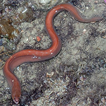
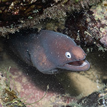

|
|
| fishes text index | photo index |
| Phylum Chordata > Subphylum Vertebrate > fishes |
| Moray
eels Family Muraenidae updated Sep 2020
Where seen? Often mistaken for snakes, these large wriggly fishes are occasionally seen on our shores. Moray eels are secretive fishes and usually seen only at night and in the more undisturbed shores with reefs and coral rubble. Sightings are usually brief as the fish disappears quickly into some crevice or hiding place. What are moray eels? Moray eels belong to the Family Muraenidae, which belongs to the Order Anguilliformes (True eels). According to FishBase: the family has 15 genera and 200 species. They are found worldwide in both tropical and temperate seas. Features: Moray eels are extremely long fishes with muscular bodies. Their bodies are compressed sideways (they are not tubular). They have no pelvic or pectoral fins. The dorsal and anal fins extend over the entire length of the long body and are continuous with the tail fin, resulting in the typical eel-like profile. Instead of scales, they have thick, smooth skin. The large, strong jaws are filled with lots of teeth. The eyes are small. They have a pair of tubular nostrils at the tip of the snout, and small circular gill openings. Eels swim by moving their muscular bodies in S-shapes, rather like a snake. Sometimes mistaken for sea snakes. Here's more on how to tell apart sea snakes, eels and eel-like animals. |
 Dorsal, anal and tail fins are continuous. Sisters Island, Jan 1 |
 No
pelvic fins, small eyes, tubular nostrils. No
pelvic fins, small eyes, tubular nostrils. Labrador Jun 08 |
| What do they eat? Moray eels'
prey include fishes, crustaceans, snails and octopus,
squid and cuttlefish. Those that eat fish have sharp, long, fang-like
teeth to grab and hold on to their slippery prey. Those that eat hard-shelled
crabs and snails have pebble-like teeth to crush prey. Two sets of jaws! A moray eel has a special trick up its throat to help it swallow prey. Lots of fish have a second set of jaws, but these tend to be hard grinding plates or jaws with little teeth that don't move much. The moray eel's second set of jaws, on the other hand, is armed with large, curved teeth and powered by elongated muscles that allow for extreme mobility. These reach forward to seize and drag prey into the eel's throat. |
 Sharp teeth! Tanah Merah, Jun 11 |
 Lunging after prey in a hole with flaring of long dorsal fins. Tanah Merah, Oct 09 |
|
| Human uses: Some species are havested
for the aquarium trade. Some species have poisonous flesh which causes
ciguatera poisoning and should thus not be eaten. Status and threats: Moray eels are not listed among the threatened animals of Singapore. However, like other fish and creatures harvested from the wild, most die before they can reach the retailers. Without professional care, most die soon after they are sold. Those that do survive are unlikely to breed. Like other creatures of the intertidal zone, they are affected by human activities such as reclamation and pollution. Over-collection can also have an impact on local populations. |
| Some Moray eels on Singapore shores |
|
 Brown moray eel |


 White-eyed moray (Gymnothorax thyrsoideus) Labrador, Oct 25 Photo and ID shared by Yan Le Su on facebook. |
| Family
Muraenidae recorded for Singapore
from Wee Y.C. and Peter K. L. Ng. 1994. A First Look at Biodiversity in Singapore. *Lim, Kelvin K. P. and Jeffrey K. Y. Low, 1998. A Guide to the Common Marine Fishes of Singapore. **from WORMS +Other additions (Singapore Biodiversity Records, etc)
|
Links
References
|